Project 06 of 06
About
The rest of it
The other pages are about the work and how it was checked. This one is everything the work came out of: a rink, a stage, a classroom, and the people who were standing there at the time.
Same coach, both ends
Seven years apart, same coach in both.
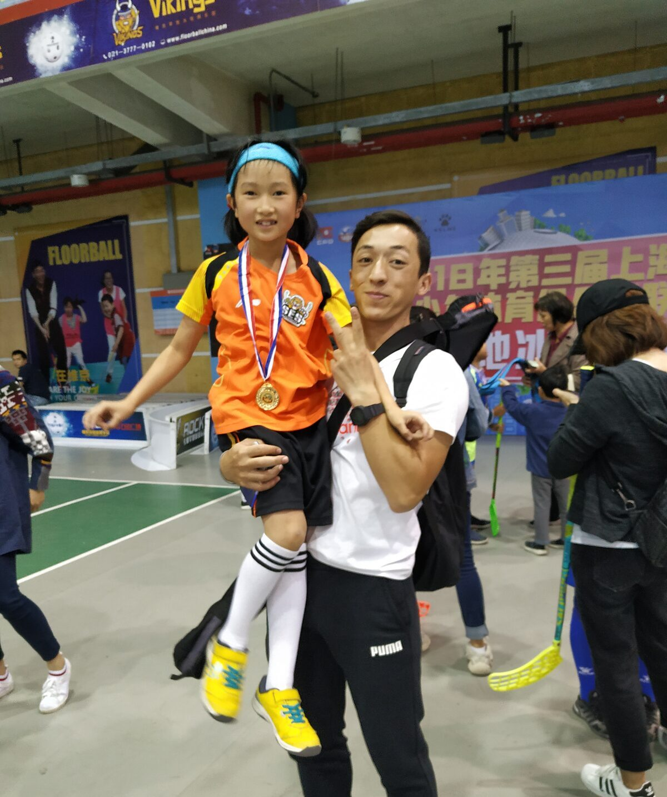
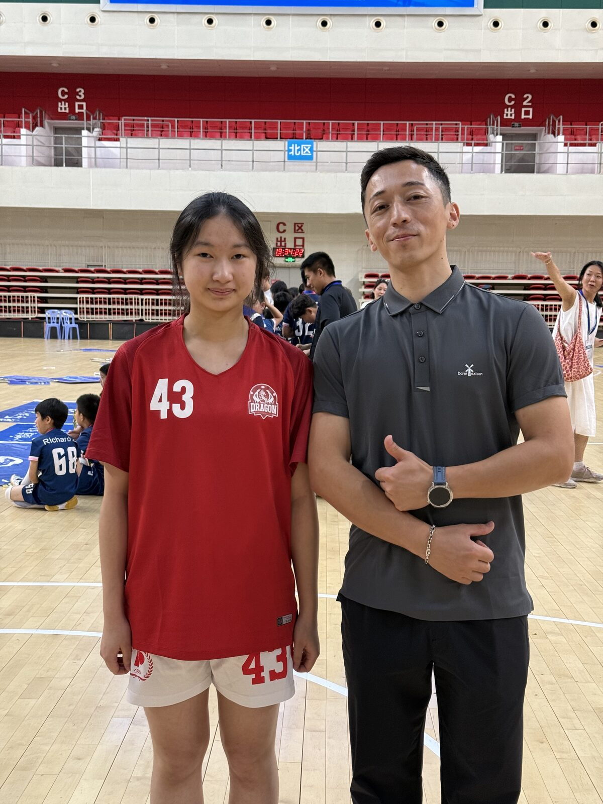
On the floor
Floorball for the Pinghe Dragons since first grade, 2017 to 2026, and still training at weekends when the year allows it. This is where the questions behind the NHL work started: what actually decides a shot, and how little of it any dataset records.
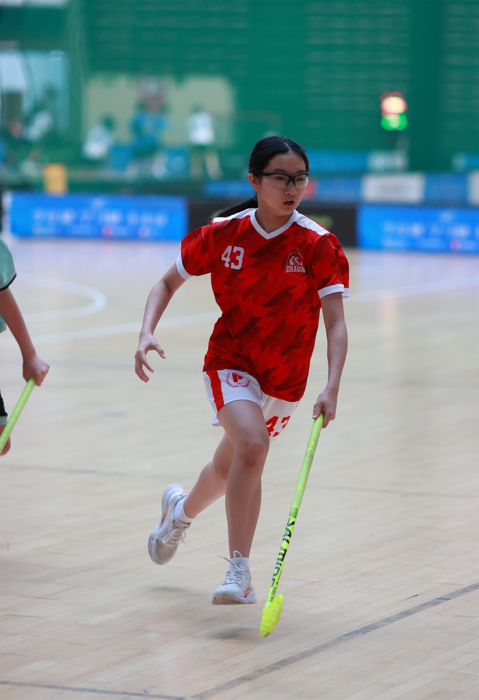
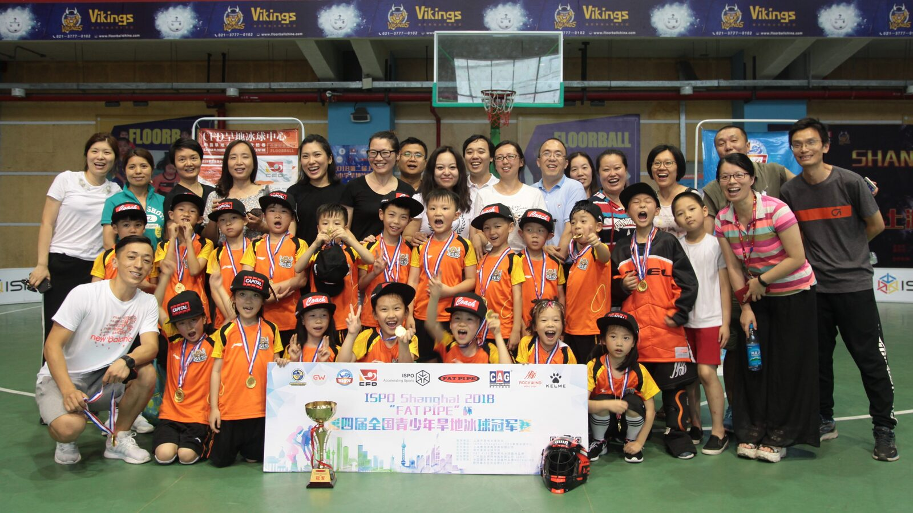
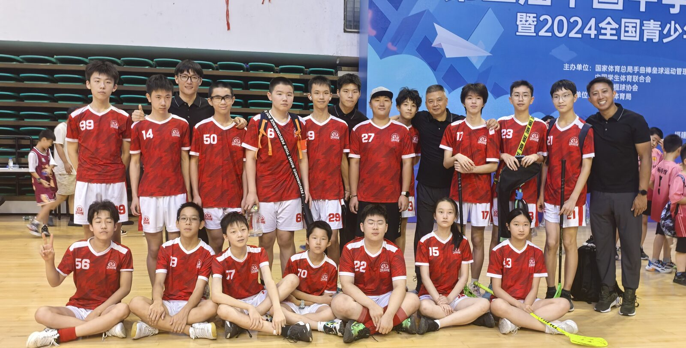
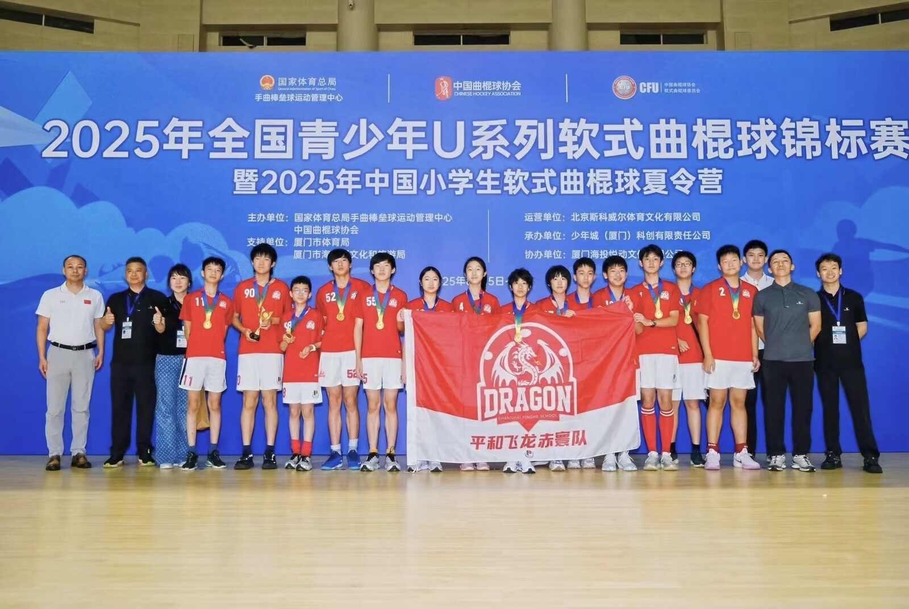
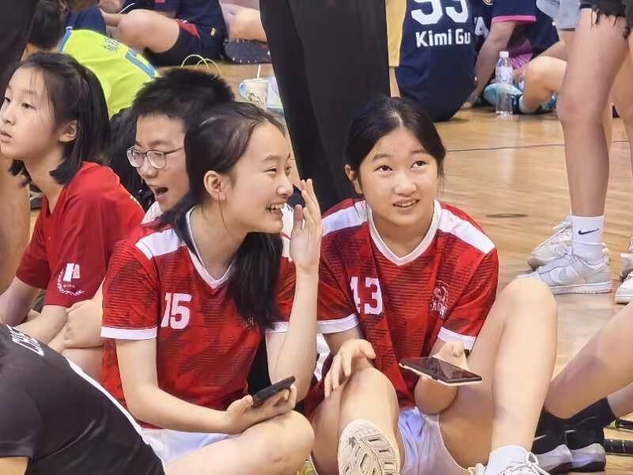
On stage
Dance, kept up over years: modern and classical, solo pieces and ensemble work.
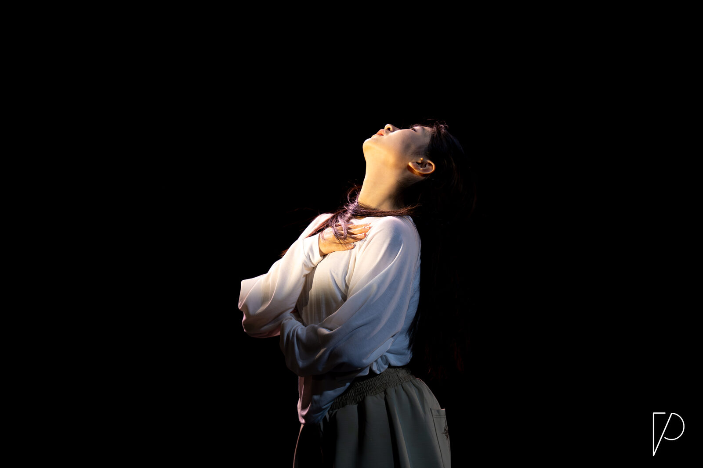
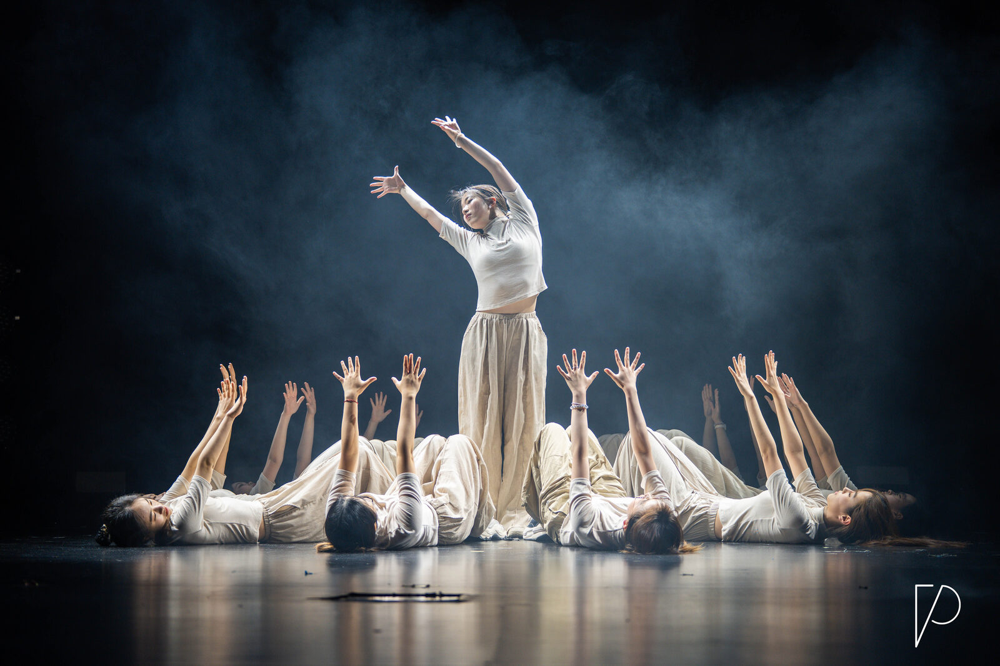
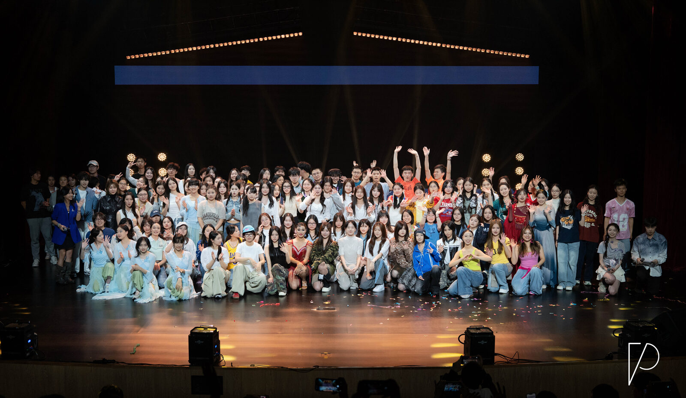
In the room
Two rooms. One is four years of teaching programming to more than fifty students, and the curriculum that came out of it has its own page. The other is the school mindfulness club, running a workshop on traditional Chinese medicinal plants for children in a hospital.
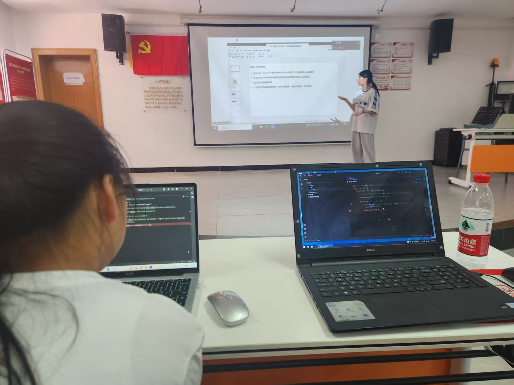
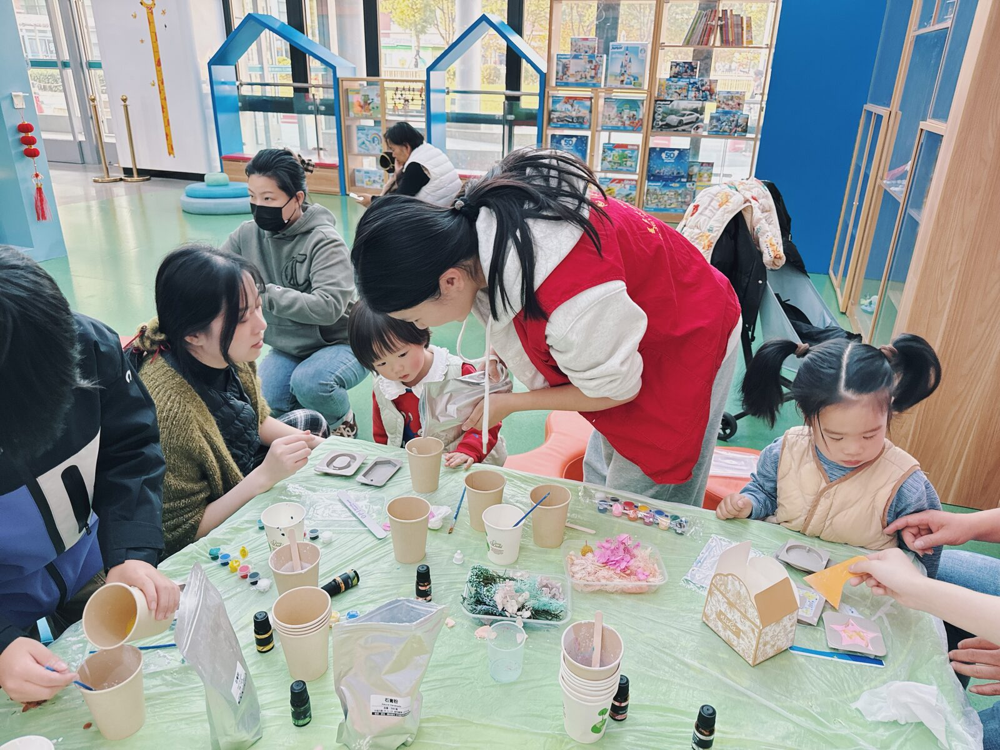